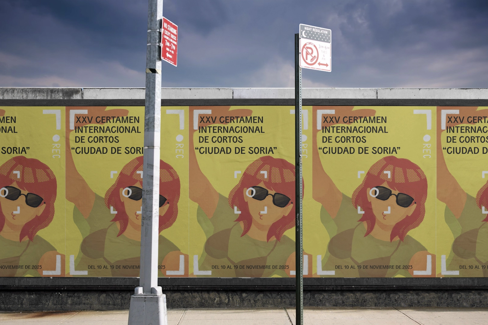

04-Cartel Certamen de Cortos: Ciudad de Soria XVII
Año: 2023
El tema de la XVI edición era la mujer en el cine. Mi propuesta juega con la percepción que se ha tenido de la mujer en la pantalla, basada en la teoría de Laura Mulvey: el male gaze. Pero, en este caso es la mujer quien toma el control de la cámara y elije como ser percibida.